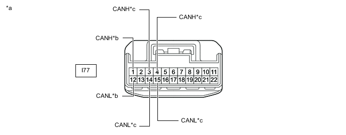
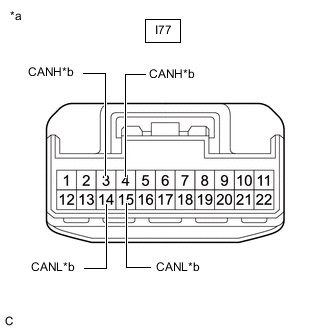
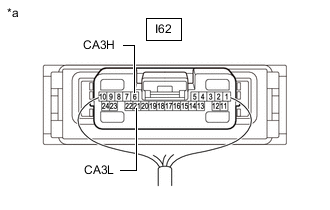

CAN COMMUNICATION SYSTEM Check Bus 3 Lines for Short Circuit
DESCRIPTION
There may be a short circuit between the CAN main bus lines and/or CAN branch lines when the resistance between terminals 6 (CA3H) and 21 (CA3L) of the central gateway ECU (network gateway ECU) is below 54 Ω.
| Symptom | Trouble Area |
|---|---|
| Resistance between terminals 6 (CA3H) and 21 (CA3L) of the central gateway ECU (network gateway ECU) is below 54 Ω. |
|
WIRING DIAGRAM

CAUTION / NOTICE / HINT
Note
-
Because the order of diagnosis is important to allow correct diagnosis, make sure to begin troubleshooting using How to Proceed with Troubleshooting when CAN communication system related DTCs are output.
-
Before measuring the resistance of the CAN bus, turn the power switch off and leave the vehicle for 1 minute or more without operating the key or any switches, or opening or closing the doors. After that, disconnect the cable from the negative (-) auxiliary battery terminal and leave the vehicle for 1 minute or more before measuring the resistance.
-
After turning the power switch off, waiting time may be required before disconnecting the cable from the negative (-) auxiliary battery terminal. Therefore, make sure to read the disconnecting the cable from the negative (-) auxiliary battery terminal notices before proceeding with work.
-
After performing repairs, perform the DTC check procedure and confirm that the DTCs are not output again.
DTC check procedure: Turn the power switch on (IG) and wait at least approximately 31 seconds.
-
After the repair, perform the CAN bus check and check that all the ECUs and sensors connected to the CAN communication system are displayed as normal.
Tech Tips
-
Before disconnecting related connectors for inspection, push in on each connector body to check that the connector is not loose or disconnected.
-
When a connector is disconnected, check that the terminals and connector body are not cracked, deformed or corroded.
PROCEDURE
-
CHECK FOR SHORT IN CAN BUS LINES (NO. 4 CAN JUNCTION CONNECTOR)
-
Disconnect the cable from the negative (-) auxiliary battery terminal.
-
Disconnect the I77 No. 4 CAN junction connector.
-
Measure the resistance according to the value(s) in the table below.

*a Front view of wire harness connector
(to No. 4 CAN junction connector)
*b
-
to Navigation Receiver Assembly
(for Navigation Receiver Type)
-
to Radio and Display Receiver Assembly
(for Radio and Display Type)
*c to Central Gateway ECU (Network Gateway ECU) - - Standard Resistance Tester Connection Condition Specified Condition Connected to I77-1 (CANH) - I77-12 (CANL) Cable disconnected from negative (-) auxiliary battery terminal 200 Ω or higher
-
Navigation receiver assembly*1
-
Radio and display receiver assembly*2
I77-3 (CANH) - I77-14 (CANL) Cable disconnected from negative (-) auxiliary battery terminal 108 to 132 Ω Central gateway ECU (network gateway ECU) I77-4 (CANH) - I77-15 (CANL) Cable disconnected from negative (-) auxiliary battery terminal 108 to 132 Ω Central gateway ECU (network gateway ECU)
-
*1: for Navigation Receiver Type
-
*2: for Radio and Display Type
Result Result Proceed to OK A NG (Line to central gateway ECU (network gateway ECU)) B NG (Line to ECU or sensor) C -
A 
REPLACE NO. 4 CAN JUNCTION CONNECTOR
C 
CHECK FOR SHORT IN CAN BUS LINES (ECU OR SENSOR) Click here
B 
-
-
CHECK FOR SHORT IN CAN BUS LINES (NO. 4 CAN JUNCTION CONNECTOR - CENTRAL GATEWAY ECU (NETWORK GATEWAY ECU))
-
Disconnect the I62 central gateway ECU (network gateway ECU) connector.
-

*a Front view of wire harness connector
(to No. 4 CAN Junction Connector)
*b to Central Gateway ECU (Network Gateway ECU) Measure the resistance according to the value(s) in the table below.
Standard Resistance Tester Connection Condition Specified Condition I77-3 (CANH) - I77-14 (CANL) Cable disconnected from negative (-) auxiliary battery terminal 1 MΩ or higher I77-4 (CANH) - I77-15 (CANL) Cable disconnected from negative (-) auxiliary battery terminal 1 MΩ or higher Result Result OK NG
OK
REPLACE CENTRAL GATEWAY ECU (NETWORK GATEWAY ECU) Click here
NG
REPAIR OR REPLACE CAN MAIN BUS LINES OR CONNECTOR (NO. 4 CAN JUNCTION CONNECTOR - CENTRAL GATEWAY ECU (NETWORK GATEWAY ECU))
-
-
CHECK FOR SHORT IN CAN BUS LINES (ECU OR SENSOR)
-
Reconnect all wire harness connectors.
-
Disconnect the connector that includes terminals CANH and CANL from the ECU or sensor to which the short circuited branch line is connected.
-

*a Component with harness connected
(Central Gateway ECU (Network Gateway ECU))
Measure the resistance according to the value(s) in the table below.
Standard Resistance Tester Connection Condition Specified Condition I62-6 (CA3H) - I62-21 (CA3L) Cable disconnected from negative (-) auxiliary battery terminal 54 to 69 Ω Tech Tips
-
If the resistance becomes normal (between 54 and 69 Ω) when the connector is disconnected from the ECU or sensor, there may be a short in the ECU or sensor.
-
If the resistance does not become normal when the connector is disconnected from the ECU or sensor, check for a short in the wire harness and repair or replace the wire harness or connector if necessary.
Result Result OK NG -
OK
REPLACE ECU OR SENSOR
NG
REPAIR OR REPLACE HARNESS OR CONNECTOR
-